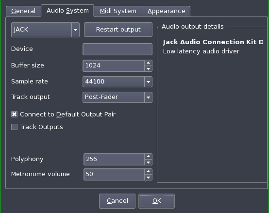
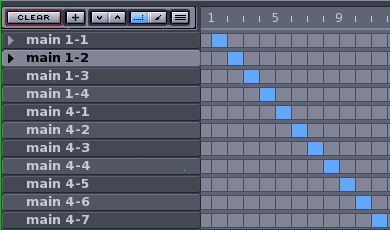
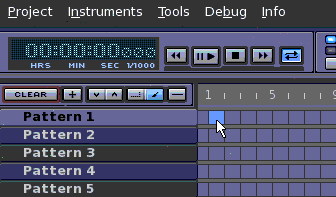
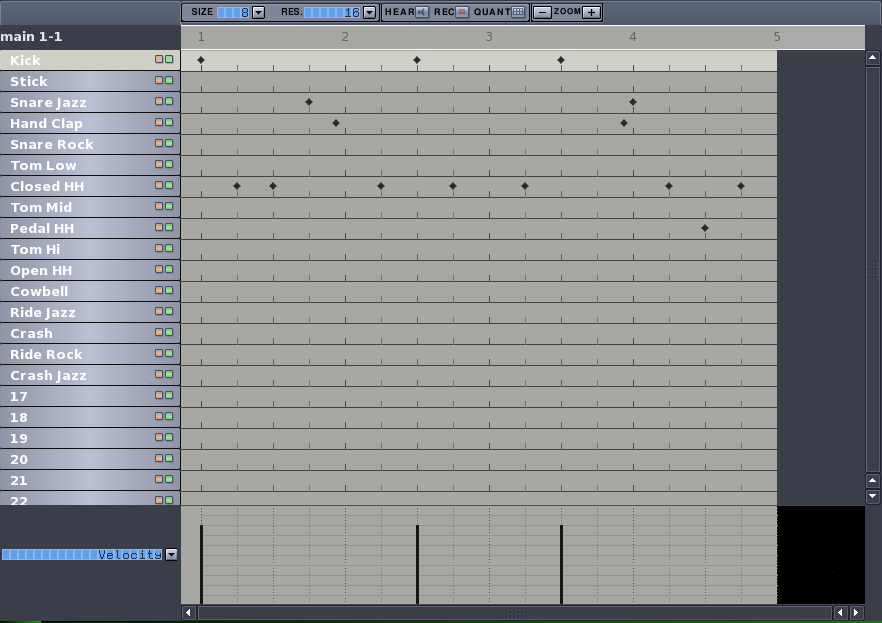
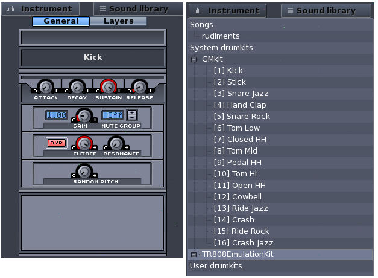
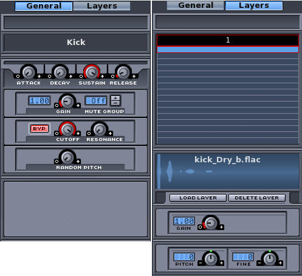
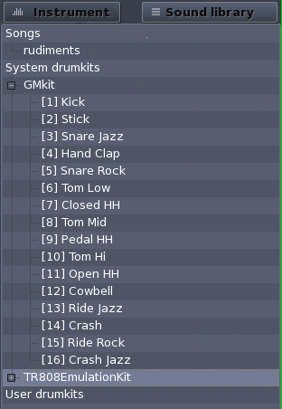
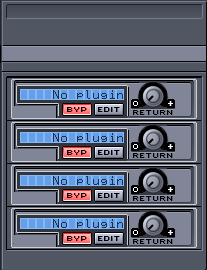
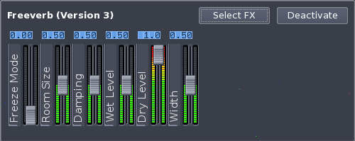
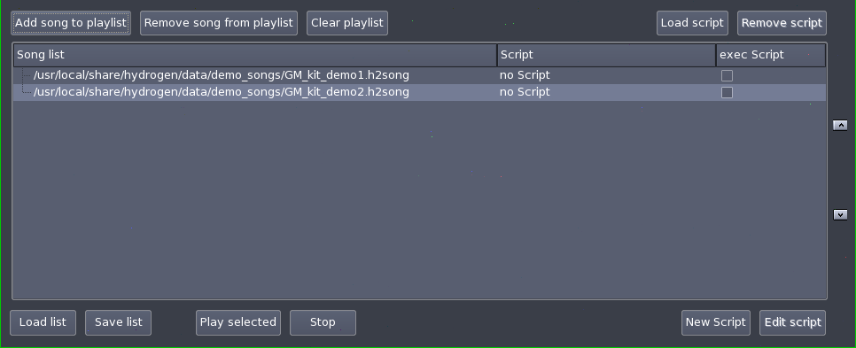

Hydrogen Manual
Antonio Piraino
Alessandro Cominu
Hydrogen is a software synthesizer which can be used alone, emulating a drum machine based on patterns, or via an external MIDI keyboard/sequencer software. Hydrogen compiles on Linux/x86 and Mac OS X, although the latter is still experimental, so ask in the developers mailing list for further details.
Table of contents
Chapter 1: Getting started
Download
The latest stable version of hydrogen is available at http://www.hydrogen-music.org.
You can download precompiled packages for the following Linux distributions and systems:
- Slackware
- Ubuntu
- Mac OS X
Ensure your host meets the following system requirements:
Install Hydrogen according to your distribution's package instructions, then execute:
$ hydrogengui
Or run hydrogengui --help for usage options:
Usage: hydrogen [-v] [-h] -s file
-d, --driver AUDIODRIVER - Use the selected audio driver (jack, alsa, oss, portaudio)
-s, --song FILE - Load a song (*.h2song) at startup
-n, --nosplash - Hide splash screen
-V, --verbose - Print a lot of debugging info
-v, --version - Show version info
-h, --help - Show this help message
If you prefer compiling Hydrogen, you can download sources from SVN with:
$ svn co http://svn.assembla.com/svn/hydrogen/trunk
Build
If you choose to compile Hydrogen, you need SCons and libtar too. Remember to compile using at least GCC 3.x to be 100% sure to avoid compiler's issues. Then follow these steps:
$ cd path/to/src
$ scons [prefix=/install/path]
$ su <password> (if performing a system wide installation)
# scons install
To clean up compiled code:
$ scons -c
To access optional compilation flags:
$ scons --help
At the moment the following flags are supported:
debug: Set to 1 to build with debug informations
lash: Set to 1 to enable lash
alsa: Set to 1 to enable alsa
jack: Set to 1 to enable jack
libarchive: Set to 1 to enable libarchive instead of libtar
prefix: Default: /usr/local
destdir: Default: none
Audio driver configuration
It's very important to choose the proper audio driver for your system, since the choice may influence quite much general performances. The choice is between OSS, ALSA, PortAudio and Jack audio driver.
- OSS audio driver: this driver uses /dev/dsp and it's based on the old OSS interface which is supported by the vast majority of sound cards available for Linux; this said, the use of this audio driver blocks /dev/dsp until Hydrogen is closed i.e. unusable by any other software. Use OSS audio drivers as a last resort.
- ALSA audio driver: the new and widely adopted Linux standard audio drivers.
- Jack audio driver: JACK is a professional audio server which can plug in other audio software, allowing extremely low lags. We strongly recommend using this driver to experience the best out of Hydrogen. JACK server will start automatically if not already running.
- PortAudio driver: an open-source multiplatform audio driver.
If for some reason none of the above mentioned audio driver is available at startup, Hydrogen will start either way, using a
null audio driver, but it won't have much use :)
Audio preferences
From the "Audio System" tab (Fig. 1) it is possible to modify the audio driver being used (OSS, Jack, ALSA, PortAudio) with its buffer and sampling rate (unless using JACK, in this case the audio driver configuration should happen before starting the JACK server).
We can set some features of Hydrogen like "Enable track outputs" useful if you want to add effects to a single instrument with jack-rack. "Connect to Default Output Pair" connects the output to the default ports: uncheck this if you want to connect JACK output to other ports without disconnecting them first.
Keep an eye also on the value of "Polyphony": depending on your CPU you may want to change the max simultaneous notes in order to prevent hydrogen from overunning the audio driver.
Fig. 1 - The Audio system tab

The "Midi System" tab (Fig. 2) concerns the MIDI input. You can choose the MIDI driver and input, setup channels, binding actions to MIDI events.
Fig. 2 - The MIDI system tab

The "Appearance" tab (Fig. 3) let's you to modify Hydrogen and QT graphical properties.
Fig. 3 - The appeareance tab

Audio engine info
The audio engine info is a window with various stats about Hydrogen and the audio driver. In case JACK is used, buffer and sampling rate should be set before starting Hydrogen (JACK automatically starts when an application tries to connect).
Fig. 4 - The Audio Engine Info window

Files used
Before working with Hydrogen, please familiarize with these files:
- *.h2pattern: XML file describing a single pattern. Patterns are group of beats and are managed in the pattern editor.
- *.h2song: XML file describing the whole song (or sequence). Songs are group of patterns with their properties and are manager using the song editor.
- *.h2playlist: XML file describing a playlist. Playlists are group of songs.
- *.h2drumkit: tar readable file containing all sound samples composing a drumkit and a description XML file. Drumkits are basically group of sound samples.
Please notice that Hydrogen uses
WELL-FORMED but
NOT VALID XML files. If you don't know what this means please check this page on
Wikipedia.
Chapter 2: Using Hydrogen
Here's an overview of Hydrogen's file menu:
Before describing the two main panels of Hydrogen, let's take a quick look at the main toolbar and its components. The main toolbar allows a few important functions:
- Pilot the song using the start, stop, pause, etc. buttons
- Choose between "pattern" or "song" mode: in "pattern" mode only the currently selected pattern will play, while in "song" mode all patterns inserted will be played.
- An advanced tap tempo function: choose note length and how many notes to wait before recalculating BPM, then click the comma key repeatedly until the 'R' letter will appear and the BPM will be updated.
- Manually set BPM
- Manage JACK transport
- Open the mixer and the instrument rack panels
Hover your mouse on Fig. 5 and for each element a quick description will popup:
Fig. 5 - The main toolbar

A few useful keybindings (not customizable for the moment):
Song editor
The panel "Song Editor" (Fig. 6) gives an overview of the whole timeline of the song (e.g. intro, verse, bridge, chorus and so on); each blue coloured square on this panel is a complete bar as shown in the underlying "Pattern Editor" panel. Here we have complete freedom to add, remove or move patterns in any order we prefer. Hover on figure 2 to learn the functions of the song editor panel:
Fig. 6 - Move or copy pattern

Enable "select mode" and perform multiple copy/paste/move operations, enable "draw mode" and insert or delete patterns.
When in "draw" mode, click on the grid to add and remove patterns.
When in "select" mode, select one or more patterns (will be marked as selected with a darker blue) and move them around. If you hold the CTRL key while dragging the patterns will copied.
Fig. 7 - Move or copy pattern

Pattern editor
The "Pattern Editor" panel (Fig. 8) let you create or modify the pattern (bar) which is being played, or add/remove notes and tune intensity as well (provided the instrument has at least one note in the pattern).
Hover the picture with the mouse to explore the pattern editor.
Fig. 8 - The pattern editor

Each instrument has its own set of features accessible right-clicking on it:
- Lock: lock that instrument (i.e. the source sound file) even if you change drumkit (this way you can easily mix different drumkit instruments and create your own!)
- Fill notes: fills every note of that instrument in the current pattern according to the grid resolution
- Clear notes: removes every note of that instrument in the current pattern according to the grid resolution
- Randomize velocity: automatically apply a pseudo-random velocity to each note of that instrument in the pattern. The more velocity you set on the instrument, the more Hydrogen will hit "hard" on that instrument when played.
- Delete instruments: delete the instrument
- And from the dropdown menu:
- Velocity: tune velocity (beat hardness).
- Pan: moves pan left to right.
- Lead&Lag: allows a slight note lead or lag in respect of the actual beat. The range is ca. 5 ticks which equals around ca. 10 ms at a tempo of 120bpm.
Rememeber this constraint concerning the grid: if you are working with a resolution of 16 you can't go back to 8 and remove a 16th note; on the other hand if you are working with a resolution of 8 and you try to insert a note in the middle of two bars (looking for a 16 bars precision), notes will be placed in the previous or in the following 8th bar.
This contraint can be removed if you disable the whole grid resolution (choose "off" from the grid resolution LCD control). Now you'll be able to place notes wherever you prefer.
Be sure to select the correct pattern in the song editor before editing!
You can set new beats clicking on button [ ] which enables direct input through a MIDI event or through a keyboard according to a mapping "key=instrument" (see Fig. 9).
] which enables direct input through a MIDI event or through a keyboard according to a mapping "key=instrument" (see Fig. 9).
Fig. 9 - Keyboard reference

Note that the name of the instrument depends on the drumkit loaded. This list refers to the GMKit loaded by default. The position of the instrument, however, is the same.
Mixer
The Mixer is useful for settings such as instrument volumes of the current drumkit, effects and various properties.
Each instrument has a volume control which can be tuned through its fader knob, and controls for pan, play solo, mute or 'test play' (play that instrument only).
The graphical volume equalizer may come in handy to keep the max volume in a 0.0 - 1.0 range, otherwise it will get distorted producing a weird sound (especially using OSS audio driver), in this case it's better to set volume down; the equalizer can be disabled clicking on the 'peak' button (saves up something on old CPUs). Hover on Fig. 10 to learn all the functions of the mixer.
By default the drumkit loaded has 16 instruments, but you can add up to 32. Use the mixer's horizontal scrollbar to see them all.
Fig. 10 - The mixer

When an instrument is selected in the pattern editor a blue LED will turn on near its play button.
The mixer allows applying four LADSPA effects (see details) and three global effects:
- Swing: shifts a few notes back or forward not randomly.
- Timing: modify timings of the notes.
- Humanize: random velocity editing
Chapter 3: Extending Hydrogen
Instruments and sound libraries
You can customize an instrument or create your own instrument from scratch.
Open the instrument rack panel from the main toolbar. A new panel with two tabs will appear:
- Instrument: edit an instrument and its properties.
- Sound library: quickly load songs, drumkits or a just a single instruments. Here is where you will find your imported drumkits too.
Fig. 11 - Instrument Rack: both tabs

If you want to create or edit an instrument, select an existing instrument or create it (from the "Instruments" menu) and select the "Instrument" tab of the rack. This tab shows two further tabs:
- General: set specific properties of the instrument
- Layers: customize instrument adding further layers that will be played according to the velocity, tune pitch and gain settings for the layer itself. Input filetypes supported depending on how you compiled Hydrogen, by default: WAV, AU, AIFF, FLAC.
Hover on Fig. 12 to see all the properties.
Fig. 12 - Both sides of the instrument editor: add effects to your sound!

If you want to quickly choose a sound sample from a drumkit, load a full drumkit or a song, select the "Sound library" tab (Fig. 13). Songs shown are located in $HOME/.hydrogen/data/songs/. You can have an audio preview of each instrument double-clicking on it or you can quick load a song right-clicking on it:
Fig. 13 - Sound library panel

LADSPA plugins
LADSPA (Linux Audio Developers Simple Plugin API) libraries can be plugged to Hydrogen to add effects to your instruments.
You need to have installed the LADSPA package (compiled from sources or find a precompiled binary package for your distribution). While the default plugins shipped will give you a rough idea of how it works you should really have a taste of the real thing installing one or more of these libraries: SWH-Plugins (requires FFTW), CMT and TAP.
Once you have installed a few plugins, open a song you'd like to add an effect to and select an instrument that has a few beats in the pattern. Click the  button in the mixer and select one of the four available effect line from the LADSPA panel (Fig. 14):
button in the mixer and select one of the four available effect line from the LADSPA panel (Fig. 14):
Fig. 14 - LADSPA plugins mixer panel

Click the "Edit" button of one plugin slot and you will be prompted with its properties window (Fig. 15):
Fig. 15 - LADSPA plugin properties window

A plugin, once assigned, can be disabled clicking on its "bypass" button in the mixer or clicking "Deactivate" on the properties window.
Once openend the plugin window you can add an effect choosing from those installed (clicking on "Select FX"): this will bring up another window (Fig. 16) that lets you choose an effect among those installed (alphabetically sorted and categorized):
Fig. 16 - LADSPA effects selection

To tune the intensity of the effect on your instrument, use the round knobs in the mixer:
Fig. 17 - Mixer plugin knobs

Playlist Editor
The playlist editor is useful if you want Hydrogen to play different songs automatically. You can also bind BASH shell script to any item of your playlist (to launch external programs, for example).
Fig. 18 - Playlist window

Support and troubleshooting
* Where do I find help? Forum, mailing-lists, TRAC?
* If you like Hydrogen contribute, donate, send us your sister, etc. etc.